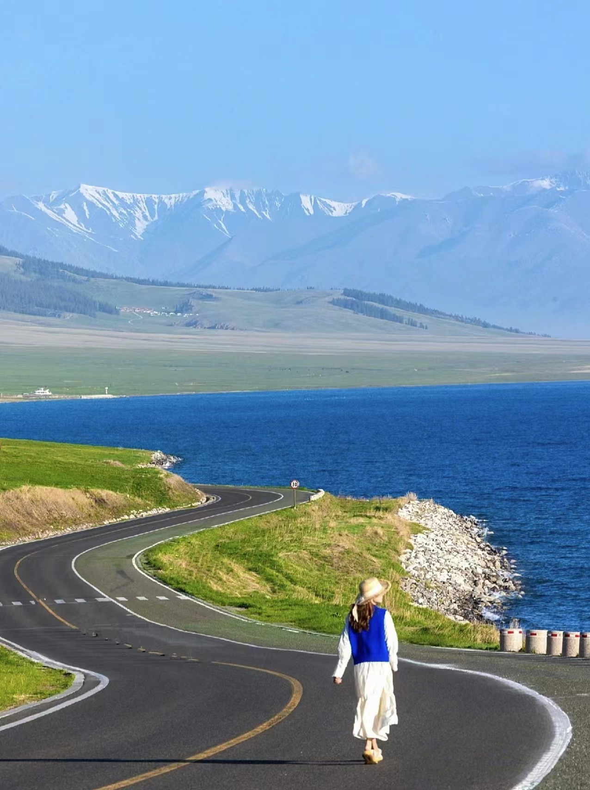
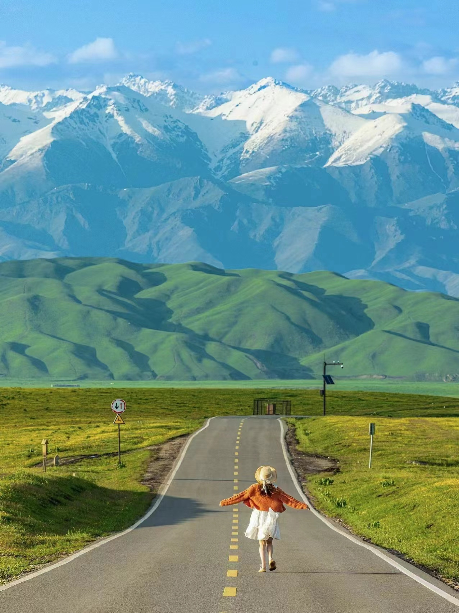
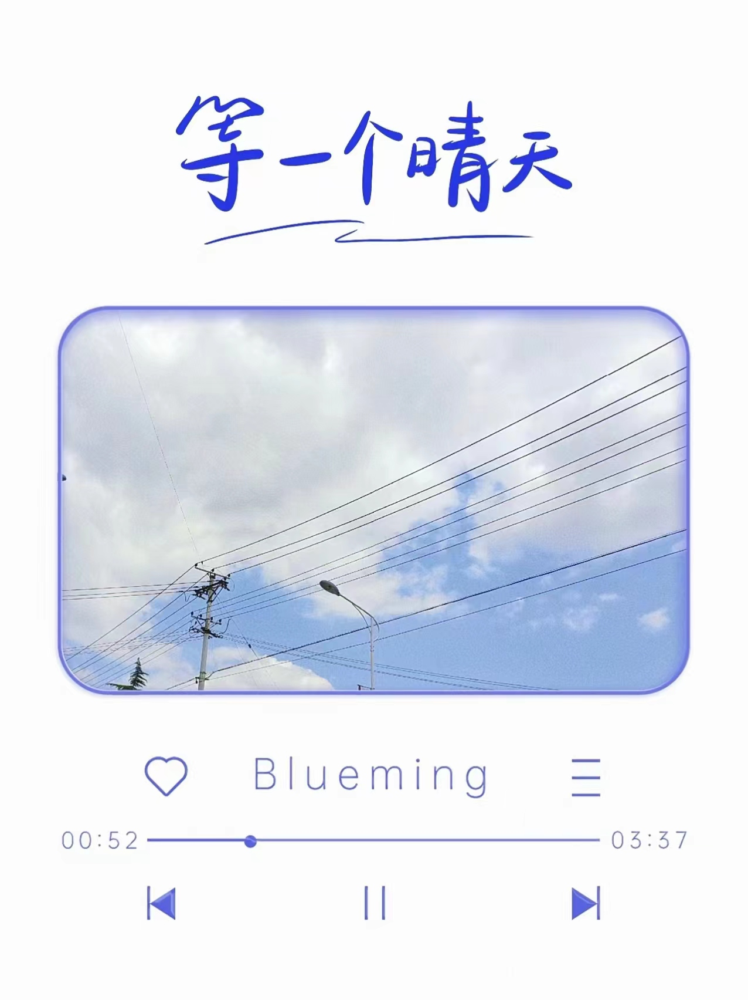

旅游
旅游它可以带给人们许多美好的回忆和独待的休验。旅游可以让我们更加深入地了解不同地方的文化、历史和自然景观， 拓展我们的视野和知识，同时，旅游也可以让我们暂时摆脱繁琐的工作和生活，享受一段轻松的时光，缓解压力和 疲劳，恢复身心健康。在旅游的过程中，我们可以结交来自世界各地的朋友，分享彼此的故事和文化，拓展自己的思路。 同时也可以尝试不同的美食、娱乐和休闲活动，让自己的身心得到放松和愉悦。


羽毛球是我最喜欢的运动，打羽毛球的赢义和尽头不是职业比赛。直到我能打出 高质量的高远球，直到我大汗淋漓那瞬间,还有那些令我开怀大笑的瞬间和打完球 回家迎面而来的晚风都让我明白:我们来人间不是为了奔赴终点,是为了真真切切体验热烈一遍!
旅游它可以带给人们许多美好的回忆和独待的休验。旅游可以让我们更加深入地了解不同地方的文化、历史和自然景观， 拓展我们的视野和知识，同时，旅游也可以让我们暂时摆脱繁琐的工作和生活，享受一段轻松的时光，缓解压力和 疲劳，恢复身心健康。在旅游的过程中，我们可以结交来自世界各地的朋友，分享彼此的故事和文化，拓展自己的思路。 同时也可以尝试不同的美食、娱乐和休闲活动，让自己的身心得到放松和愉悦。

推荐音乐：
Take me hand音乐在我的日常中必不可少，因为听歌让我能够安静下来，让我放松下来，让我能够去思考。我喜欢 听各种各样的歌，不同的歌会让我产生不同的想法。歌曲能够调动我的情绪让 我能感知到自己是活生生的人，是一个有思想有情绪的灵魂，也可以借此来发泄我的那些负面的情绪。